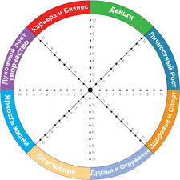

<ion-view title="Pick a challenge">
    <ion-content overflow-scroll="true" padding="true" class="has-header">
        <div>
            <p>Some friendly
                <strong>markdown</strong>
            </p>
        </div>
        <div style="margin: 0 auto;">
            
        </div>
        <a href="#/create" class="button button-stable button-block ">Create a new one</a>
    </ion-content>
</ion-view>